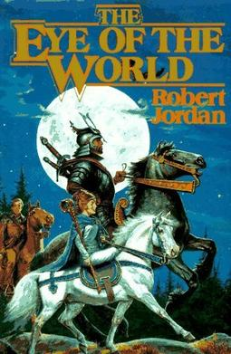

The Wheel of Time series by Robert Jordan is a wonderful story set in a beautifully crafted world filled with unique cultures and even non human races.
The story starts in an out of the way farming village with a mysterious creature appearing in of the corner of the eye and what seems to be a noble lady and her protecter who are rather out of place in this small town.
In the first book we are introduced to the three main characters; Rand al'Thor, Perrin Aybara, and Matrim Cuathon. Alongside the the main characters is a colorful cast of characters, some of whom become main characters in all but name. We are also introduced to the first of many new words and cultural ideas, but it is by far not that last in this fantastically made world.
Though this quote is from the second book, I find it sums up what is the biggest decision that the three main characters must make, “Some men […] choose to seek greatness, while others are forced to it. It is always better to choose than to be forced. A man who is forced is never completely his own master. He must dance on the strings of those who forced him.” —The Great Hunt by Robert Jordan